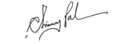

Termination Letter
...
Reference: TL-...
...,
...
Dear ...,
Current Designation: ...,
Previous Warning Ref.No: ...,
Our previous letter which is cited above may be referred to wherein you were advised by your Head of Department to give more attention to your duties and improve your performance. Inspite of this, no improvement has been noticed in your performance.
Therefore, this is regretfully informed on behalf of the management that your services have been terminated with immediate effect. You may obtain clearance dues from the account department.
Whishing you the very best of success in your future endeavours.
Sincerely,

Mr. Chinmoy Pal
Director
Xaviers Consultancy